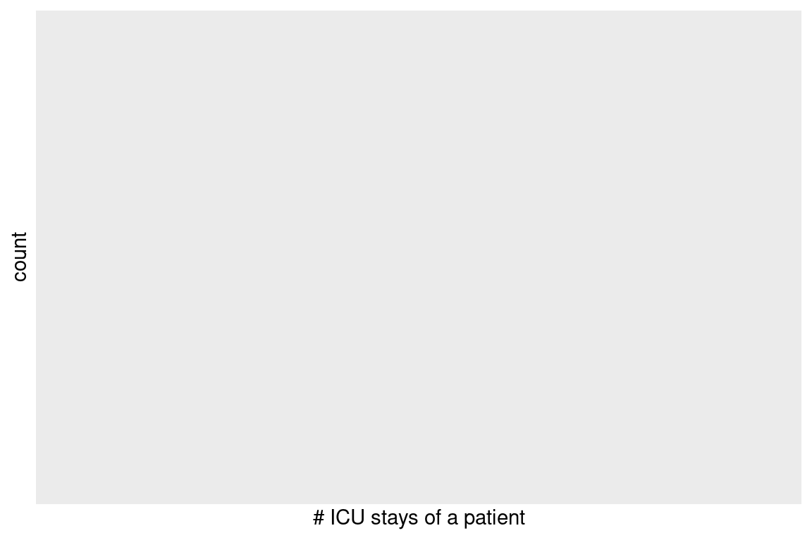

The /mnt/mimiciv/1.0 folder on the teaching server contains the MIMIC-IV data. On my Mac, it’s at /Users/huazhou/Documents/Box Sync/MIMIC/mimic-iv-1.0.
Here, we will import only one csv file icustays.csv.gz for demonstration purpose. Motivated students can write a bash script for loading all MIMIC-IV data files into a SQLite database and contribute to https://github.com/MIT-LCP/mimic-code.
# delete icustays table if existscmd <-"sqlite3 mimiciv.sqlite 'DROP TABLE IF EXISTS icustays;'"system(cmd, intern =TRUE)
character(0)
Create an empty icustays table with data types. Because SQLite does not support date-time data type (https://www.sqlite.org/datatype3.html), we store intime and outtime as TEXT.
<SQL>
SELECT
`subject_id`,
`hadm_id`,
`stay_id`,
`first_careunit`,
`last_careunit`,
`intime`,
`outtime`,
`los`
FROM (
SELECT *, RANK() OVER (PARTITION BY `subject_id` ORDER BY `intime`) AS `q01`
FROM `icustays`
)
WHERE (`q01` <= 1)
# Source: SQL [1 x 1]
# Database: sqlite 3.39.4 [/home/rstudio/203b-lecture/slides/12-dbplyr/mimiciv.sqlite]
n
<int>
1 0
7 SQL query
show_query usefully shows the SQL query translated from dplyr query.
<SQL>
SELECT
`subject_id`,
`hadm_id`,
`stay_id`,
`first_careunit`,
`last_careunit`,
`intime`,
`outtime`,
`los`
FROM (
SELECT *, RANK() OVER (PARTITION BY `subject_id` ORDER BY `intime`) AS `q01`
FROM `icustays`
)
WHERE (`q01` <= 1)
8 Transform in database, plot in R
icustays_tble %>%group_by(subject_id) %>%summarise(n =n()) %>%ggplot() +geom_bar(mapping =aes(x = n)) +labs(x ="# ICU stays of a patient")

9 SQL translation
dbplyr package (a dplyr backend for databases) has a function, translate_sql, that lets you experiment with how R functions are translated to SQL:
translate_sql(x ==1& (y <2| z >3))
<SQL> `x` = 1.0 AND (`y` < 2.0 OR `z` > 3.0)
translate_sql(x ^2<10)
<SQL> (POWER(`x`, 2.0)) < 10.0
translate_sql(x %%2==10)
<SQL> (`x` % 2.0) = 10.0
translate_sql(paste(x, y))
<SQL> CONCAT_WS(' ', `x`, `y`)
translate_sql(mean(x))
Warning: Missing values are always removed in SQL aggregation functions.
Use `na.rm = TRUE` to silence this warning
This warning is displayed once every 8 hours.
<SQL> AVG(`x`) OVER ()
translate_sql(mean(x, na.rm =TRUE))
<SQL> AVG(`x`) OVER ()
10 Timings
Let’s compare the timings of dplyr (in-memory) and dbplyr (on disk database).
Older version of ggplot2, e.g., v2.2.1, will output error. This is because ggplot2 needed to compute the count per bin by going through all the rows. But here icustays_sql is just a pointer to the SQLite table. We had to use the transform in database, plot in R strategy.